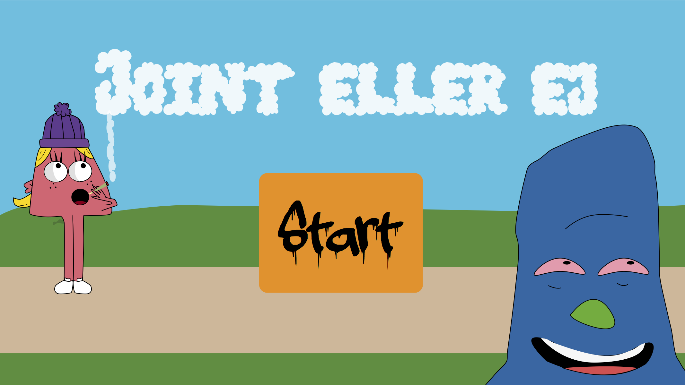
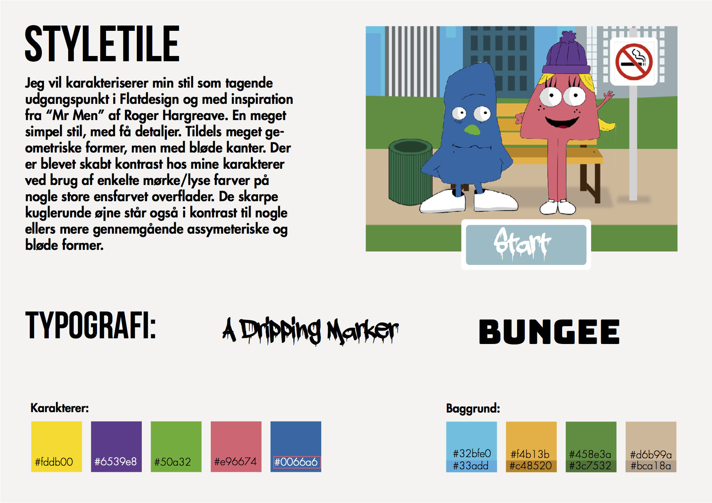

Egen animation

Introduktion
I dette projekt var målet at lave et animationsspil. Ved at designe et miljø og opfinde nogle karakterer, og derved sammensætte en interaktiv historie.Temaet "Grundlæggende animation" har jeg i den sammenhæng arbejdet med interaktive animationer på websider. Herunder har jeg lavet scenografi, karakterdesign, figuranimation og interaktiv storytelling. Jeg nåede desværre ikke at fuldende mit spil, grundet flere forskellige årsager
karakterdesign og skitser
rentegnede karakterer og scenografi
Endelige spritesheet til mine to hovedkaraktere. Efterfølgende blevet brugt til at placere figurerne på min scene, og implementere simple flytte-animationer.
design - styletile
